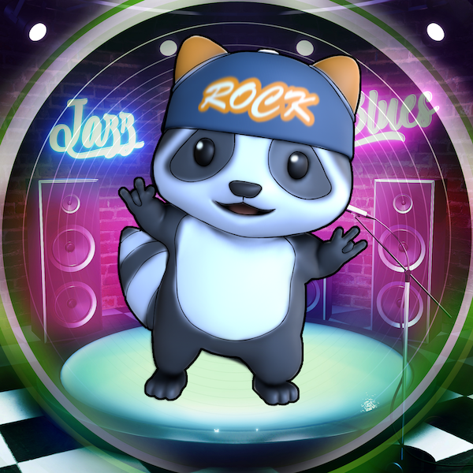

<!doctype html>
<html lang="en">
  <head>
    <meta charset="UTF-8" />
    <meta name="viewport" content="width=device-width, initial-scale=1.0" />
    <title>Say it with songs Multi-Target Demo</title>
    <style>
      :root {
        --panel-bg: linear-gradient(160deg, rgba(15, 23, 42, 0.92), rgba(15, 23, 42, 0.74));
        --panel-border: rgba(148, 163, 184, 0.3);
        --text: #f8fafc;
        --muted: #cbd5e1;
        --accent-start: #67e8f9;
        --accent-end: #a5f3fc;
      }

      html,
      body {
        height: 100%;
        margin: 0;
        font-family: "Trebuchet MS", "Segoe UI", sans-serif;
        background: transparent;
        color: var(--text);
        overflow: hidden;
      }

      a-scene {
        position: fixed !important;
        inset: 0;
        width: 100vw;
        height: 100vh;
        z-index: 1;
      }

      .a-canvas {
        background: transparent !important;
      }

      .overlay {
        position: fixed;
        top: 1rem;
        left: 1rem;
        z-index: 5;
        width: min(24rem, calc(100vw - 2rem));
        padding: 1rem 1.1rem;
        border: 1px solid var(--panel-border);
        border-radius: 1rem;
        background: var(--panel-bg);
        backdrop-filter: blur(14px);
        box-shadow: 0 20px 45px rgba(2, 6, 23, 0.35);
        transition: opacity 180ms ease, transform 180ms ease;
      }

      .overlay.is-dismissed {
        opacity: 0;
        pointer-events: none;
        transform: translateY(-0.75rem);
      }

      .status-pill {
        display: inline-flex;
        align-items: center;
        gap: 0.45rem;
        margin: 0.35rem 0 0.2rem;
        padding: 0.35rem 0.65rem;
        border-radius: 999px;
        background: rgba(148, 163, 184, 0.16);
        color: #e2e8f0;
        font-size: 0.82rem;
        font-weight: 700;
      }

      .status-pill::before {
        content: "";
        width: 0.58rem;
        height: 0.58rem;
        border-radius: 999px;
        background: #94a3b8;
      }

      .status-pill[data-tone="ready"]::before {
        background: #facc15;
      }

      .status-pill[data-tone="live"]::before {
        background: #4ade80;
      }

      .status-pill[data-tone="error"]::before {
        background: #f87171;
      }

      .eyebrow {
        display: inline-block;
        margin-bottom: 0.45rem;
        padding: 0.25rem 0.6rem;
        border-radius: 999px;
        background: rgba(103, 232, 249, 0.12);
        color: var(--accent-start);
        font-size: 0.76rem;
        font-weight: 700;
        letter-spacing: 0.08em;
        text-transform: uppercase;
      }

      h1 {
        margin: 0 0 0.4rem;
        font-size: 1.15rem;
        line-height: 1.25;
      }

      p {
        margin: 0.45rem 0;
        color: var(--muted);
        font-size: 0.96rem;
        line-height: 1.45;
      }

      .links {
        display: flex;
        flex-wrap: wrap;
        gap: 0.6rem;
        margin-top: 0.85rem;
      }

      .links button {
        flex: 1 1 auto;
        display: inline-flex;
        align-items: center;
        justify-content: center;
        padding: 0.85rem 1.2rem;
        border-radius: 999px;
        color: #082f49;
        font-size: 1rem;
        font-weight: 700;
        text-decoration: none;
        background: linear-gradient(135deg, var(--accent-start), var(--accent-end));
        border: 0;
        cursor: pointer;
        box-shadow: 0 8px 20px rgba(103, 232, 249, 0.25);
        transition: transform 120ms ease, box-shadow 120ms ease;
      }

      .links button:hover:not(:disabled) {
        transform: translateY(-1px);
        box-shadow: 0 10px 24px rgba(103, 232, 249, 0.35);
      }

      .links button:disabled {
        cursor: wait;
        opacity: 0.65;
      }

      .links a {
        display: inline-flex;
        align-items: center;
        justify-content: center;
        padding: 0.55rem 0.9rem;
        border-radius: 999px;
        color: var(--text);
        font-size: 0.85rem;
        font-weight: 600;
        text-decoration: none;
        background: transparent;
        border: 1px solid var(--panel-border);
        cursor: pointer;
        transition: background 120ms ease;
      }

      .links a:hover {
        background: rgba(148, 163, 184, 0.15);
      }

      .note {
        margin-top: 0.75rem;
        font-size: 0.82rem;
      }

      .targets {
        margin-top: 0.9rem;
      }

      .target-list {
        display: flex;
        gap: 0.6rem;
        margin-top: 0.4rem;
      }

      .target-list a {
        display: flex;
        flex-direction: column;
        align-items: center;
        gap: 0.25rem;
        padding: 0.35rem;
        border-radius: 0.6rem;
        background: rgba(148, 163, 184, 0.1);
        text-decoration: none;
        color: var(--text);
        font-size: 0.75rem;
        font-weight: 600;
        transition: background 120ms ease;
      }

      .target-list a:hover {
        background: rgba(148, 163, 184, 0.2);
      }

      .target-list img {
        width: 3.6rem;
        height: 3.6rem;
        object-fit: cover;
        border-radius: 0.4rem;
        border: 1px solid var(--panel-border);
      }

      .qr {
        display: flex;
        align-items: center;
        gap: 0.7rem;
        margin-top: 0.9rem;
        padding: 0.5rem 0.6rem;
        border-radius: 0.7rem;
        background: rgba(255, 255, 255, 0.06);
      }

      .qr img {
        width: 4.2rem;
        height: 4.2rem;
        border-radius: 0.35rem;
        background: white;
      }

      .qr span {
        font-size: 0.8rem;
        color: var(--muted);
        line-height: 1.35;
      }

      @media (max-width: 640px) {
        .overlay {
          top: auto;
          bottom: 1rem;
        }
      }
    </style>
    <script src="https://aframe.io/releases/1.5.0/aframe.min.js"></script>
    <script src="https://cdn.jsdelivr.net/gh/donmccurdy/aframe-extras@v7.0.0/dist/aframe-extras.min.js"></script>
    <script src="https://cdn.jsdelivr.net/npm/mind-ar@1.2.5/dist/mindar-image-aframe.prod.js"></script>
    <script>
      document.addEventListener("DOMContentLoaded", () => {
        const sceneEl = document.querySelector("a-scene");
        const startButton = document.querySelector("#start-camera");
        const statusEl = document.querySelector("#camera-status");
        const helperEl = document.querySelector("#camera-helper");
        const overlayEl = document.querySelector(".overlay");
        const targetZero = document.querySelector("#target-zero");
        const targetOne = document.querySelector("#target-one");
        const bgm = document.querySelector("#bgm");
        let arSystem = null;

        const setStatus = (message, tone, helperText) => {
          statusEl.textContent = message;
          statusEl.dataset.tone = tone;
          helperEl.textContent = helperText;
        };

        sceneEl.addEventListener("loaded", () => {
          arSystem = sceneEl.systems["mindar-image-system"];
          startButton.disabled = false;
          setStatus(
            "Ready to start camera",
            "ready",
            "Click Start Camera, then allow webcam access if your browser asks."
          );
          overlayEl.classList.remove("is-dismissed");
        });

        sceneEl.addEventListener("renderstart", () => {
          if (sceneEl.renderer) {
            sceneEl.renderer.setClearColor(0x000000, 0);
          }

          if (sceneEl.canvas) {
            sceneEl.canvas.style.background = "transparent";
            sceneEl.canvas.style.position = "relative";
            sceneEl.canvas.style.zIndex = "1";
          }
        });

        startButton.addEventListener("click", async () => {
          if (!arSystem) return;

          startButton.disabled = true;
          setStatus(
            "Starting camera",
            "ready",
            "If macOS or your browser asks for camera access, allow it and wait a moment."
          );

          // Resume Web Audio context inside user gesture so A-Frame sound can play later
          const listener = sceneEl.audioListener;
          if (listener && listener.context && listener.context.state === "suspended") {
            await listener.context.resume();
          }

          try {
            await arSystem.start();
          } catch (error) {
            console.error(error);
            startButton.disabled = false;
            setStatus(
              "Camera failed to start",
              "error",
              "Check macOS Camera permissions for this browser, close any app already using the webcam, and reload."
            );
          }
        });

        sceneEl.addEventListener("arReady", () => {
          if (arSystem && arSystem.video) {
            arSystem.video.style.zIndex = "0";
            arSystem.video.style.background = "transparent";
          }

          setStatus(
            "Camera is live",
            "live",
            "Point your webcam at the bear or raccoon target on another device or on paper."
          );
          overlayEl.classList.add("is-dismissed");
        });

        sceneEl.addEventListener("arError", () => {
          startButton.disabled = false;
          overlayEl.classList.remove("is-dismissed");
          setStatus(
            "MindAR could not start",
            "error",
            "MindAR raised an error while starting. On macOS, confirm both browser-level and System Settings camera access, then reload."
          );
        });

        targetZero.addEventListener("targetFound", () => {
          console.log("[AR] Raccoon target found");
          bgm.components.sound.playSound();
          setStatus("Raccoon target found", "live", "Tracking target 0. Move slowly to keep the model locked.");
        });

        targetOne.addEventListener("targetFound", () => {
          console.log("[AR] Bear target found");
          bgm.components.sound.playSound();
          setStatus("Bear target found", "live", "Tracking target 1. Move slowly to keep the model locked.");
        });

        targetZero.addEventListener("targetLost", () => {
          console.log("[AR] Raccoon target lost");
          bgm.components.sound.pauseSound();
          setStatus(
            "Camera is live",
            "live",
            "Tracking paused. Re-center the raccoon or bear image inside the webcam view."
          );
        });

        targetOne.addEventListener("targetLost", () => {
          console.log("[AR] Bear target lost");
          bgm.components.sound.pauseSound();
          setStatus(
            "Camera is live",
            "live",
            "Tracking paused. Re-center the raccoon or bear image inside the webcam view."
          );
        });
      });
    </script>
  </head>
  <body>
    <aside class="overlay">
      <span class="eyebrow">MindAR Demo</span>
      <h1>Say it with songs Multi-Target Demo</h1>
      <p>
        Start the camera, then point your webcam at either target image. The raccoon model appears for target 0 and the bear model appears for target 1.
      </p>
      <div id="camera-status" class="status-pill" data-tone="ready">Loading scene</div>
      <p id="camera-helper">
        Waiting for A-Frame and MindAR to finish loading.
      </p>
      <div class="links">
        <button id="start-camera" disabled>Start Camera on your phone</button>
      </div>

      <div class="targets">
        <p class="note">Point your camera at one of these target images - click to make full screen:</p>
        <div class="target-list">
          <a href="target-raccoon.png" target="_blank" rel="noreferrer">
            
            <span>Raccoon</span>
          </a>
          <a href="target-bear.png" target="_blank" rel="noreferrer">
            
            <span>Bear</span>
          </a>
        </div>
      </div>

      <div class="qr">
        
        <span>Scan to open this demo on your phone</span>
      </div>

      <p class="note">
        This panel hides once the camera is running so the scanning view stays clear.
      </p>
    </aside>

    <a-scene
      mindar-image="imageTargetSrc: https://cdn.jsdelivr.net/gh/hiukim/mind-ar-js@1.2.5/examples/image-tracking/assets/band-example/band.mind; autoStart:false; uiError:no; uiLoading:no; uiScanning:yes;"
      color-space="sRGB"
      renderer="colorManagement: true, physicallyCorrectLights, alpha: true"
      background="transparent: true"
      vr-mode-ui="enabled: false"
      device-orientation-permission-ui="enabled: false"
    >
      <a-assets>
        <audio id="sfx" src="aktasok-salsa-151315.mp3" preload="auto" loop></audio>
        <a-asset-item
          id="bearModel"
          src="https://cdn.jsdelivr.net/gh/hiukim/mind-ar-js@1.2.5/examples/image-tracking/assets/band-example/bear/scene.gltf"
        ></a-asset-item>
        <a-asset-item
          id="raccoonModel"
          src="https://cdn.jsdelivr.net/gh/hiukim/mind-ar-js@1.2.5/examples/image-tracking/assets/band-example/raccoon/scene.gltf"
        ></a-asset-item>
      </a-assets>

      <a-entity light="type: ambient; intensity: 1.1"></a-entity>
      <a-entity light="type: directional; intensity: 0.8" position="0 1 1"></a-entity>

      <a-camera position="0 0 0" look-controls="enabled: false"></a-camera>

      <a-entity id="target-zero" mindar-image-target="targetIndex: 0">
        <a-gltf-model
          rotation="0 0 0"
          position="0 -0.25 0"
          scale="0.05 0.05 0.05"
          src="#raccoonModel"
          animation-mixer
        ></a-gltf-model>
      </a-entity>

      <a-entity id="target-one" mindar-image-target="targetIndex: 1">
        <a-gltf-model
          rotation="0 0 0"
          position="0 -0.25 0"
          scale="0.05 0.05 0.05"
          src="#bearModel"
          animation-mixer
        ></a-gltf-model>
      </a-entity>

      <a-entity id="bgm" sound="src: #sfx; autoplay: false; loop: true; volume: 1"></a-entity>
    </a-scene>
  </body>
</html>
